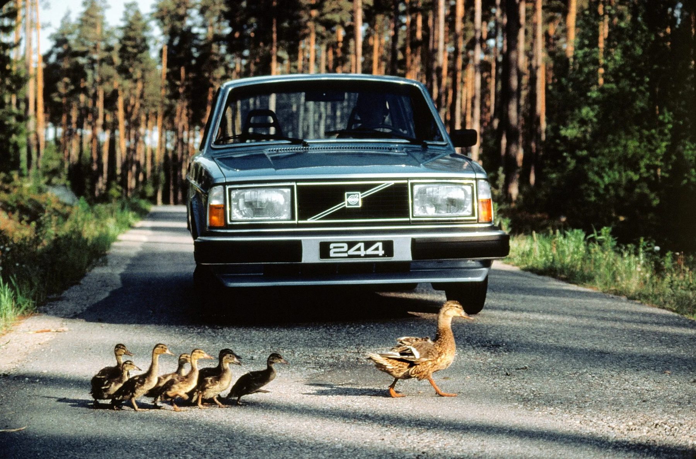
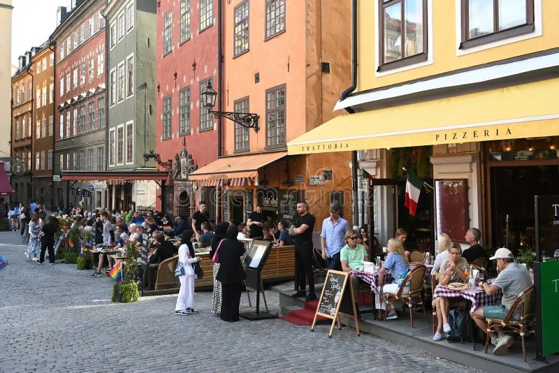
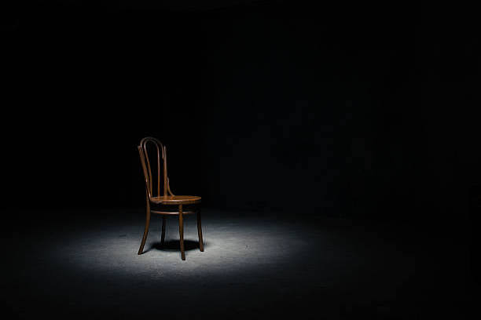

Ники Брантмарк
«…не слишком мало, не слишком много…»
Звучит как личное чувство. Человек оглядывает шкаф, вспоминает, что носил за год, и решает: хватит. Но если прислушаться, как это появляется вокруг нас, оно чаще приходит извне. Об этом говорят бренды, книги, тур-агентства, и каждый раз вместе передаётся ещё что-то: образ человека, которому достаточно.
«…не слишком мало, не слишком много…»
«…секрет хорошей жизни от шведов…»

Volvo рекламировала свои машины в 1966 году на американском рынке. Реклама утверждала, что автомобиль не устареет вместе с модой и в среднем служит одиннадцать лет. А через какое-то время, в другой рекламе компания высказалась о других ожиданиях долговечности, ведь в Штатах культура вождения другая. Обещание осталось, но стало зависеть от дорог, климата и от того, как ездит покупатель. Одиннадцать лет оказались не свойством машины, а ответом на вопрос «при каких условиях».
С идеей умеренности происходит то же самое. Статьи и книги описывают шведское lagom как «в самый раз», как жизнь без крайностей. Звучит как универсальный рецепт. Но у каждого рецепта есть адресат: человек с достаточным доходом, жильём и временем, который может выбирать, чего у него будет меньше.

Есть два человека. У каждого в шкафу пусть будет по семь вещей: пальто, свитер, джинсы, рубашка, ботинки, куртка, шарф. Со стороны шкафы неотличимы. Первый мог бы купить больше, но не хочет: когда вещь изнашивается, он заменяет её, а число семь пересматривает, если захочет. Второй носит те же семь вещей, потому что других нет, и заменить износившееся ему нечем. Число одно, а смысл разный. У первого это решение, у второго обстоятельство.
7
вещей · случай 1
вещей · случай 2
«…не только через хвастовство, но через скромность, строгость, стушевывание, всегда свидетельствующие о ещё большей роскоши…»
Посмотрите, что меняет возможность заменить вещи. Оставим количество вещей прежним, изменим условия.
Сколько вещей вам достаточно на сезон?
Можно ли заменить вещи сейчас?
?
Выберите количество вещей

Бывает и другая сторона. Если человек живёт на ограниченный бюджет и умеренность помогает ему сэкономить, например носить то, что уже есть, и не покупать новое ради моды, она действительно работает на него. Но для этого нужны вещи, которые ещё можно носить, и спокойствие по поводу того, что скажут другие. Когда вещей нет, слово «достаточно» легко подменяется словом «приходится». Где проходит граница между ними, зависит не от самого человека.
Выходит, кто-то называет меру, кто-то получает возможность её выбирать, а кому-то мера достаётся вместе с обстоятельствами. И каждый раз полезно задать четыре вопроса.
К двум случаям К условиям выбора
Учебные модели: реплики во втором и третьем разделах, бюджеты и расчёты в разделах про гардероб и экономию. Они не являются интервью или результатами исследования.
Социологи давно заметили, что умеренность может работать и как знак. Когда броская роскошь перестаёт отличать людей, потому что её слишком много и она доступна слишком многим, различие перебирается в сдержанность. Скромность, строгость и «простота» начинают стоить дороже показной роскоши, потому что позволить себе простоту можно, только когда есть из чего выбирать. Так отказ от лишнего превращается в способ показать, кто мы такие.